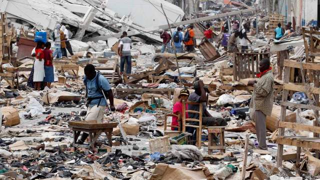

Главная страница
Жаркое лето 2010
2010 год был полон на плохие события. Начиная от землетрясений и заканчивая авиакатстрофами...
Нашей стране тоже досталось в 2010 году. Вообще во Северном полушарии температура воздуха с апреля по июнь била все рекорды. Последствия мы все прекрасно помним.
Все лето на территории России полыхали лесные пожары, которые выжгли более 200 тысяч гектаров дикого леса.
Помимо этого, возникший из-за пожаров смог заполонил крупные города, в особенности Москву.
Досталось не только России: в Китае случилась самая крупная засуха за последние семьдесят лет. А в Гренландии некоторые ледники начали таять с огромной скоростью.
Землетрясение в Гаити

Девять лет назад один из самых известных островов в мире постигла страшная беда – в Карибском бассейне произошло землетрясение. Амплитуда толчков составила семь баллов, а сам эпицентр находился
неподалеку от города Леогане (25 километров от столицы)
Землетрясение продолжалось почти две недели. Последствия были ужасны: в сумме пострадало приблизительно три миллиона человек (30% населения Гаити). Из них триста тысяч погибли, еще столько же
оказались ранены. Все остальные лишились своих домов.
Усугубил это происшествие еще тот факт, что Гаити является одной из беднейших стран в мире. Из-за случившейся катастрофы система образования была практически уничтожена из-за разрушения
большинство школ и университетов. Также не на что было строить новые дома для пострадавших...
Авария на АЭС Фукусиме—1

Год спустя, когда мир еще не оправился от тяжелой судьбы гаитян и лесных пожаров в России, взорвалась ядерная станция Фукусима-1, которая была разрушена землетрясением и наводнением
одновременно.
Когда на станцию обрушились сразу два «подарка» природы, процесс охлаждения ядерных реакторов стал невозможен, из-за чего и произошел взрыв.
Помимо разрушения станции, самым страшным последствием стал выброс радиации, под который попали более двухсот тысяч человек. А ещё каждый на планете стал немного ближе к лучевой болезни,
получив микродозы радиации
Общий ущерб оценили в сто миллиардов долларов. К 2013 году работа станции была полностью прекращена и остановлена, поскольку для устранения всех последствий
японцам понадобится около сорока лет.
Катастрофа в Аральском море
50 лет назад, когда в СССР строился коммунизм, а вера в светлое будущее была сильнее, чем сегодня, Аральское море было четвертым по своей площади, идя сразу после Каспийского,
Верхнего и Виктории. Но сейчас его вообще не существует.
Причиной стала развивающаяся индустриализация, на растерзание которой и было отдано море. Во время строительства новых каналов для полива хозяйств Туркменистана вода активно бралась из рек,
впадающих в Аральское море. Из-за этого площадь моря стала постепенно уменьшаться...
В конце 20 века само озеро разделилось на несколько частей, что, в общем, символично. К 2014 году от прежней площади моря осталось только 10%, а остальная часть стала пустыней.